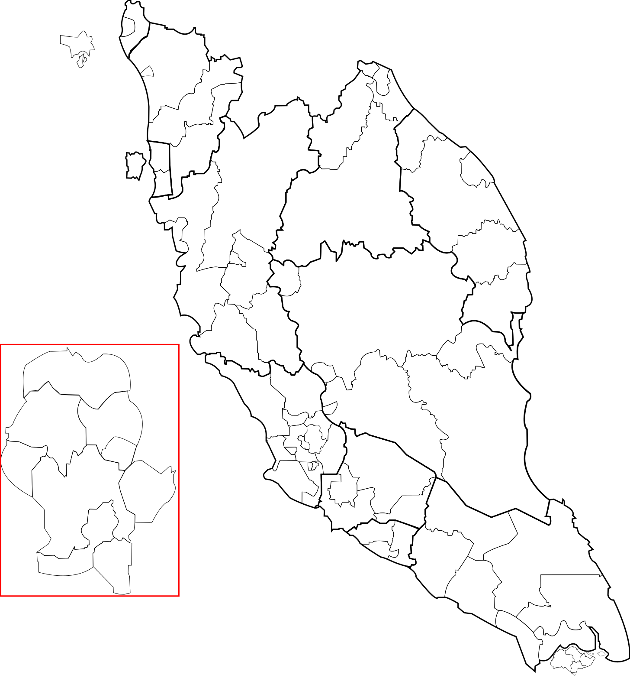
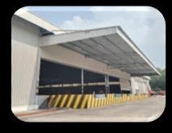
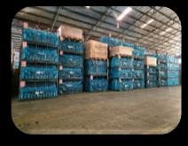

Production Logistics
Inbound warehousing, line-side delivery and coordinated material flows supporting automotive manufacturing.
Explore services →One trusted partner for warehousing, transportation, freight forwarding, inventory management, distribution and end-to-end supply chain solutions.


From inbound materials to production lines and international distribution, FURI connects every stage through coordinated logistics operations.
Inbound warehousing, line-side delivery and coordinated material flows supporting automotive manufacturing.
Explore services →Packaging production, returnable packaging and circulation management for automotive components.
Explore services →Short-distance distribution and long-haul transportation connecting suppliers, plants and regional hubs.
Explore services →Integrated warehousing, freight and cross-border coordination supported by a nationwide logistics network.
Explore services →Connecting production, logistics and technology within one automotive ecosystem.
FURI Global Sdn Bhd was established in December 2022 as a joint venture between Furi Supply Chain Technology Co., Ltd. and Perusahaan Otomobil Nasional Sdn Bhd (PROTON), combining international supply-chain expertise with deep automotive industry experience in Malaysia.
FURI brings logistics resources, automotive expertise and digital capabilities into one connected service platform.
Led by experience and united by a shared commitment to building resilient automotive supply chains.
Corporate strategy, business growth and regional partnerships.
Financial stewardship, governance and organisational support.
Operational excellence, forwarding, transportation and warehouse performance.
Supplier development, sourcing strategy and procurement performance.
FURI combines logistics execution, automotive support services, trade and digital management across the supply chain.
Materials and components delivered directly to production lines according to operational schedules.
Industrial packaging, returnable packaging and cargo-space optimisation solutions.
Scheduled land transportation with shipment visibility and performance control.
Freight forwarding, customs support and cross-border shipment coordination.
Import and export support connecting products, suppliers and automotive markets.
Sequencing, sub-assembly and specialised production support for automotive components.
Coordinated resources, processes and partners managed as one connected operating network.
Data-enabled logistics management supporting visibility, planning and operational control.
Hover over a location on the map—or a warehouse card—to explore our automotive logistics facilities in Perak and Selangor.



* Facility information is based on company-provided reference material. Unconfirmed figures should be updated before final publication.
Company activities, community programmes and the latest updates from the FURI Global team.
Bringing teams together to review performance, share progress and align the way forward.
Celebrating togetherness, appreciation and the festive spirit with the FURI team.
A memorable evening celebrating our people, achievements and shared journey.
Celebrating Aidilfitri with colleagues, families and the wider FURI community.
Connecting partners to strengthen the automotive supply-chain ecosystem.
Practical ideas for faster, leaner and more consistent operations.
Exploring responsible practices for a more sustainable supply chain.
Developing confident leaders for tomorrow's logistics challenges.
Celebrating continuous improvement ideas created by our teams.
Aligning our teams, priorities and ambition for the year ahead.
* The event content above is for design demonstration and should be replaced with confirmed information.
A dedicated space for FURI Global certifications, customer recognition and corporate achievements.
Recognition for operational performance and service quality.
Recognising supply-chain collaboration with our customers.
A space for ISO, safety and corporate compliance certifications.
* These award names are placeholders and do not claim actual FURI Global achievements.
We are always looking for people who are passionate about logistics, technology and the automotive industry.